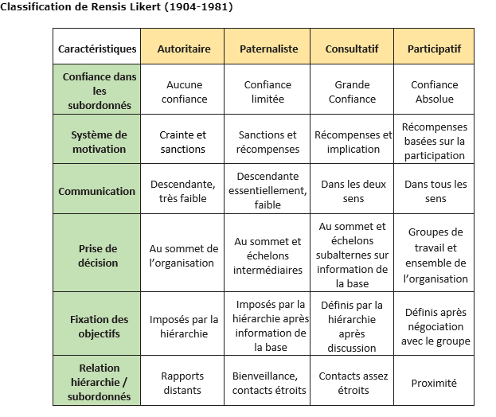

Comment le management peut-il amener les acteurs à coopérer efficacement ?
La culture organisationnelle : un facteur de cohésion
Définition : Culture organisationnelle
Ensemble des valeurs, normes, rites et symboles partagés dans l’organisation.
Fondamental : Rôles
Donne une identité
Renforce l’appartenance
Guide les comportements
Attention :
Culture forte = cohésion mais peut freiner le changement
Culture faible = flexibilité mais moins d’adhésion
La communication : un outil central de coordination
Fondamental : Les types de communication
Selon le public :
Interne : entre les membres de l’organisation
Externe : clients, fournisseurs, partenaires
Selon le cadre :
Formelle : organisée (réunions, mails, notes…)
Informelle : spontanée (discussions, échanges informels…)
Selon le sens de communication :
Communication descendante :
Du supérieur vers les salariés
Objectif : donner des consignes, informer, contrôler
Exemple : feedback, remontée de problèmes
Communication horizontale / transversale :
Communication entre acteurs sans relation de subordination directe dans la situation d’échange, même s’ils peuvent appartenir à des niveaux hiérarchiques différents dans l’organisation.
Objectif : coordonner et coopérer
Exemple : travail en équipe, projets transversaux
Fondamental : Les styles de communication
Directif : ordres, peu d’échanges
Participatif : dialogue, implication
Persuasif : convaincre, influencer
Fondamental : Enjeux de la communication
Transmettre efficacement l’information
Assurer la coordination
Favoriser la motivation
Réduire les conflits
Renforcer la cohésion
Le style de direction et le leadership
Style de direction
Style de direction selon le modèle Rensis Likert

Le leadership
Définition : Leadership
Capacité à influencer et entraîner un groupe
Complément : Types de leadership
Type | Définition | Caractéristiques | Effets | Exemple / limite |
|---|---|---|---|---|
Leadership charismatique | Le leader influence grâce à sa personnalité, son charisme et sa capacité à susciter l’admiration |
|
| Dirigeant emblématique (fondateur, entrepreneur inspirant) |
Leadership participatif | Le leader implique les collaborateurs dans les décisions et favorise les échanges |
|
| Processus parfois plus long |
Leadership transformationnel | Le leader cherche à transformer l’organisation et ses membres en les amenant à dépasser leurs intérêts individuels pour un objectif collectif |
|
| correspond :
|
Différence manager / leader
Manager
Manager : personne qui occupe une fonction définie par l’organisation et exerce une autorité hiérarchique :
Statut formel
Pouvoir lié à une position (fonction)
Missions :
Organiser
Planifier
Contrôler
Diriger
Leader
Leader : personne qui influence naturellement un groupe, indépendamment de son statut
Statut informel
Repose sur :
Charisme
Compétences
Capacité à fédérer
Peut émerger spontanément
La dynamique de groupe : clé de la coopération
Définition : Dynamique de groupe
Fonctionnement et interactions entre les membres d’un groupe
Complément : Facteurs de cohésion
Objectifs communs
Confiance
Communication
Complément : Risques des interactions
Conflits
Passager clandestin
Mauvaise coordination
Synthèse : les leviers pour mobiliser les acteurs
Levier | Rôle | Effet attendu |
|---|---|---|
Culture | Donne des repères communs | Cohésion et sentiment d’appartenance |
Communication descendante | Donner les consignes | Clarification des objectifs |
Communication ascendante | Faire remonter l’information | Implication et adaptation |
Communication horizontale | Coopération fonctionnelle | Coordination et innovation |
Style de direction | Organiser les relations | Motivation des salariés |
Leadership | Influencer et fédérer | Engagement et adhésion |
Dynamique de groupe | Favoriser les interactions | Coopération efficace |